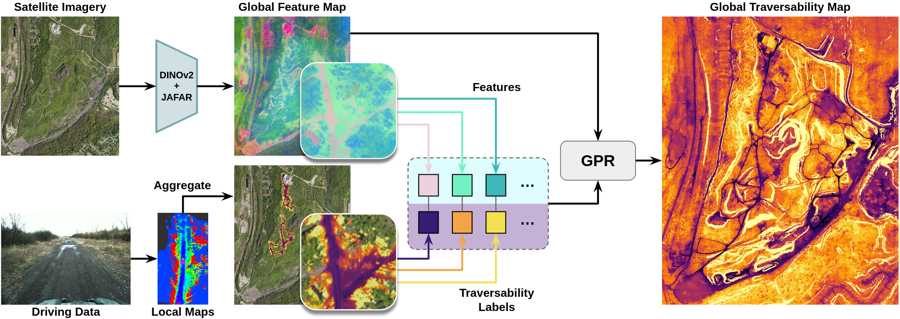
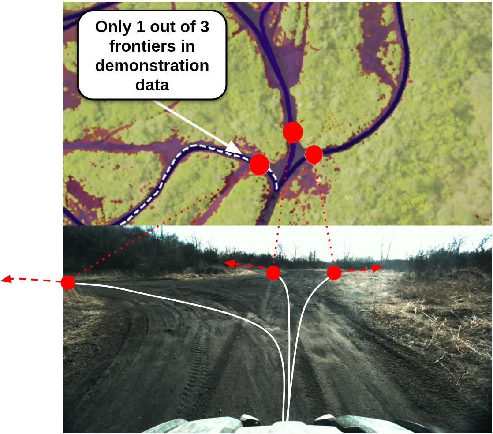
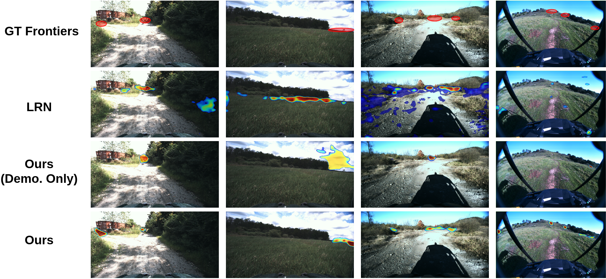

Overview
We propose a method for long-range and traversability-aware affordance learning and frontier estimation. We generate supervision data by creating satellite traversability maps, supervised using local traversability maps derived from human driving data. From these maps we generate several feasible long-range paths per pose, providing a more thorough set of demonstrations than human data alone. Representing these paths in polar coordinates allows us to supervise in the heading-space, circumventing the issues of depth-estimation noise and failed point tracks that hinder existing image-space methods. We demonstrate that this approach improves performance in long-range off-road navigation by more than 10% in various offline benchmarks and reduces the number of human interventions in a broad set of real-world experiments.
Distilling Global Traversability into Frontiers

We start with an off-road driving dataset and generate local traversability maps at each timestep using SALON, registering them together with RTK GPS. In parallel, high-resolution features are extracted from an RGB satellite map using DINOv2 and JAFAR. Using the registered map as supervision, Gaussian Process Regression predicts traversability values for the entire satellite map, even in areas the robot never visited.
Ground Truth Frontier Computation

We plan paths on the global traversability map to a set of goals beyond the local mapping range. For each path, we find the furthest point that isn't occluded by lethal terrain and label its heading relative to the vehicle as a viable frontier, with a score based on the traversability of the whole path. This produces a richer source of supervision than human demonstration alone, instead capturing multiple viable frontiers per image.
Qualitative Results

Qualitative comparison of our method to Long Range Navigator (LRN). Noisy point tracks and terrain occlusions cause inaccurate training signals for LRN, resulting in false positives and missed frontiers. Training only on demonstration data causes our method to fail in scenarios with multiple frontiers. By incorporating planning-based supervision, our method is able to better distinguish multiple viable frontiers.
Real-World Experiments

Resulting paths taken by our method and baselines in a subset of our real-world experiments on a Yamaha Viking ATV. Across five courses totaling over 1500 meters of autonomous driving, our method incurs the fewest total human interventions and takes the least total time to complete the courses.
Video
BibTeX
@inproceedings{sivaprakasam2026distilling,
title={Distilling Global Traversability Priors for Image-based Affordance Prediction in Off-road Environments},
author={Sivaprakasam, Matthew and Triest, Samuel and Nye, Micah and Atha, Deegan and Khattak, Shehryar and Fan, David and Wang, Wenshan and Scherer, Sebastian},
booktitle={IEEE/RSJ International Conference on Intelligent Robots and Systems (IROS)},
year={2026},
}